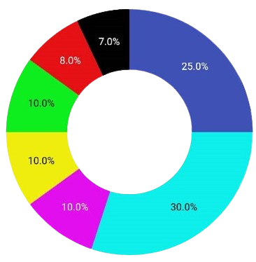
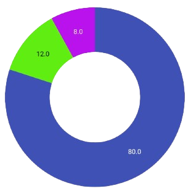

Phase 1
- Website Development and Whitepaper
- Token Creation (Both Networks)
- Creation Participations Token (CXTP)
- Start Community
- Global Marketing Campaign


COREXTREME will implement an exchange system in which two networks can be interconnected easily, quickly and at low cost to facilitate the exchange of cryptocurrencies and NFTs. Corextreme will have a staking system and a versatile protocol that will allow the user to access online game creation systems and will have a deployment for the creation and safekeeping of NFTs. Its native currency, COREXTREME, can be used as a means of payment within all the functions of our system.
COREXTREME: A dual crypto asset that enables direct interaction between the SMARTCHAIN BP20 network and the CORE BLOCKCHAIN. It achieves this through the use of two native currencies: COREXTREME PAR BNB (for Binance native currency) and COREXTREME PAR CORE (for the CORE network). This ecosystem aims to facilitate seamless exchange between CORE and BNB cryptocurrencies within a single swap, leveraging the COREXTREME ecosystem.
Liquidity and Swaps: COREXTREME will have liquidity in both networks and a dedicated swap mechanism for direct asset exchange at a low gas cost.
Implementation: COREXTREME will serve as the native currency for COREXTREME WALLET and COREXTREME SWAP. Users can exchange COREXTREME (BP20) for COREXTREME (CORE) and perform swaps with other crypto assets within the BSC SMARTCHAIN and CORE BLOCKCHAIN networks.
Accessibility and Flexibility: This milestone enhances blockchain technology accessibility, allowing community members to utilize their assets more effectively and paving the way for a more flexible and inclusive financial ecosystem.
The cryptocurrency Corextreme is a project that aims to create a decentralized platform for the exchange of digital assets, based on blockchain technology. COREXTREME offers the following features:
Security: Users can exchange their cryptocurrencies without intermediaries, using smart contracts that ensure the execution of transactions.
Speed: The platform utilizes a network of distributed nodes that process transactions quickly and efficiently.
Scalability: The platform can handle a high volume of operations, thanks to its modular and flexible architecture.
Transparency: All transactions are recorded on the blockchain, allowing for verification of authenticity and traceability.
Accessibility: The platform is compatible with various devices and operating systems, making it user-friendly and easy to adopt.
The native token of the platform is COREXTREME, which is used for transaction fees and participation in network governance
COREXTREME features a burning system designed to reduce the quantity of cryptocurrencies in the market. This process can yield several benefits, including increasing scarcity and the value of the remaining tokens, reducing inflation, enhancing transparency, and distributing profits to holders.
As the creators of the first dual cryptocurrency system, the Corextreme team is committed to burning any coins that are not distributed in the airdrop after liquidity is added. Additionally, we conduct controlled burns quarterly, aiming to burn 30% of the total supply
Token Burns or Destruction will occur quarterly.
Token burns or destruction will be carried out via BSCScan, using the contracts source code to ensure the complete destruction of the corresponding token amount.
Burned tokens will be subtracted from the total supply of existing tokens.
First burn: The initial burn will take place 48 hours after liquidity has been added.
The amount to be destroyed will be the remaining 5% of tokens not distributed in the airdrop.
Six burns will be conducted, each burning 4% of the supply.
Six additional burns will occur, each burning 2%.
The remaining burns will be 1% each, continuing until reaching a total of 30% of the total supply.
According to the chart, the distribution of tokens is carried out in several categories. Below, I will describe how funds are allocated in each of them:
Development and Ecosystem (8%):span> 8% is allocated to the development and growth of the project. This includes activities such as improving the protocol, expanding the community, and promoting the ecosystem.
DEX Liquidity (25%): 25% of the tokens are reserved to provide liquidity on decentralized exchanges (DEX). This ensures that users can buy and sell the token efficiently.
Presale (30%): 30% of the tokens are allocated to the initial presale. This allows investors to obtain the token before it is publicly available.
CEX Listing (10%): Another 10% is reserved for listing on centralized exchanges (CEX). This facilitates access to the token for a wider audience.
Airdrop (10%): 10% is allocated to airdrops, which are free distributions of tokens to the existing community or new users.
CEO (10%): 10% is allocated to the founding team or the CEO of the project as an incentive and reward for their work.
Rewards and Staking (7%): 7% will be allocated to the payment of rewards from the staking and farming system within the corextreme ecosystem.
Finally, it is important to note that this distribution may vary depending on the project and its specific objectives. Each category plays a crucial role in the success and sustainability of the project.

COREXTREME PARTICIPATIONS (CXTP) is the third token of the COREXTREME ecosystem. It is a token of the BEP20 SMARTCHAIN network, with a smart contract that limits its issuance to 10,000 units with four decimals. CXTP offers its holders the opportunity to participate directly in the project as partners or shareholders, receiving a reward of 30% of the royalties generated by the ecosystem. These royalties are added directly to the tokens liquidity, in order to increase its value and generate benefits for its holders.
FUNCTIONS OF THE COREXTREME PARTICIPATIONS TOKEN (CXTP) WITHIN THE ECOSYSTEM:
The CXTP tokens function is to raise funds to consolidate the success of the project and provide the necessary liquidity for its development, thus maintaining a win-win relationship between the involved parties. The CXTP token also allows its holders to access the services and products of the COREXTREME ecosystem, as well as the advantages and exclusive benefits that will be announced.
COMMERCIALIZATION OF CXTP:
CXTP will be marketed in three sales phases, as follows:
First Phase: 30% of the tokens will be sold at an initial price of $3 per token.
Second Phase: another 30% of the tokens will be sold at a price of $3.5 per token.
Third Phase: the last 30% of the tokens will be sold at a price of $4 per token.
The remaining 10% of the tokens will be reserved to add the corresponding rewards to the royalties generated by the ecosystem. At the end of the sale, liquidity will be added and the token can be traded through PancakeSwap or within the COREXTREME Swap ecosystem. When launching COREXTREME Token (CTX), all CXTP tokens that have not been sold in the presale will be burned or destroyed through the smart contract. All CXTP holders will be able to exchange their tokens for CTX tokens or place them in staking in the COREXTREME ecosystem.
Liquidity %
Development %
Advertising %

After the pre-sale phases, the token will have a value of $6.5.
0xe800C99d2D6c41E1d4a3BC9f84eBCD2b93C996aF
0xCA5B7FB8473fF2714a3d175bfE794ddFB6369e1D
0x374A55a48fb530d68D7c534A7B1317d806617B3d